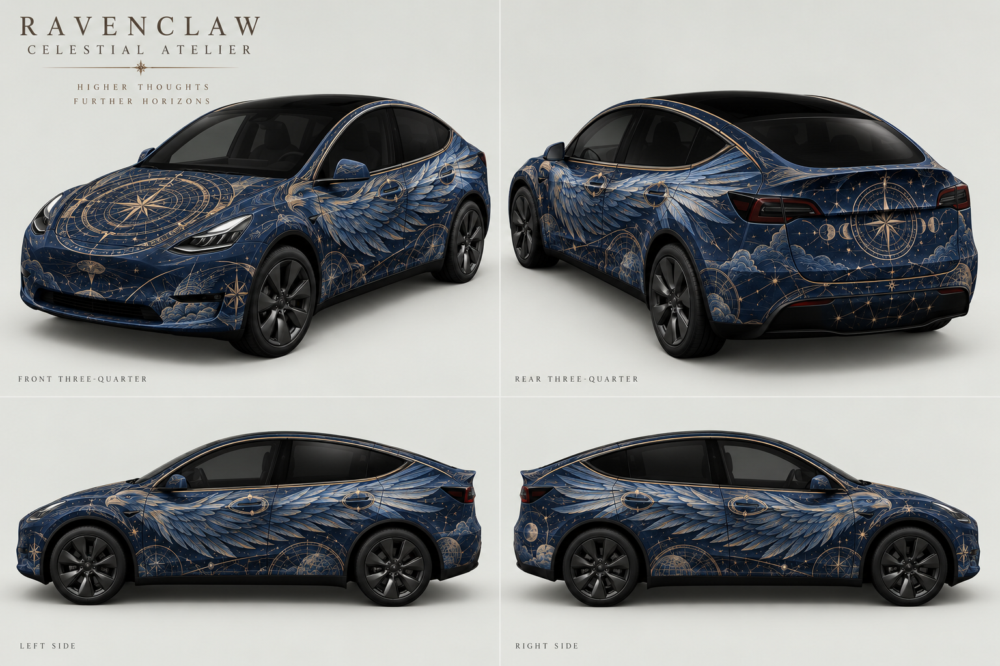

A · Concept first
Multi-view car references → AI concept → decomposed UV atlas. Stronger visual flow, but guessed handle placement.
Rotate A in the viewer ↗RAVENCLAW / ORIGINAL MODEL Y / DESIGN EXPERIMENT
One theme, three approaches. Every preview below is a real render of an exported PNG on the same Model Y mesh. The AI concept is shown separately. These are small design experiments, not a controlled statistical benchmark.
Multi-view car references → AI concept → decomposed UV atlas. Stronger visual flow, but guessed handle placement.
Rotate A in the viewer ↗Exact template + labeled features + neutral car views → atlas directly. Bold panels, weaker continuity across doors.
Rotate B in the viewer ↗Concept-first artwork → screenshot-guided corrections → separate generated ornaments placed at measured mesh coordinates.
Rotate C in the viewer ↗Download C · original Model Y PNG
| Check | A | B | C |
|---|---|---|---|
| Approx. mean handle-surround offset* | 14 px | 20 px | 3 px |
| PNG size | 424 KB | 406 KB | 412 KB |
| Artwork spanning doors | Coherent flow | More segmented | Coherent flow |
| Mirror / painted rail detail | Present | Present | Present |
| Perfect panel seams / in-car proof | No / no | No / no | No / no |


Neutral geometry references · A source atlas · B source atlas · C artwork before ornament placement · Experiment notes
Recommendation: use image generation for coherent artwork, and the actual mesh for precise placement. Review the resulting PNG on the car after every change. A convincing concept alone cannot establish fit.